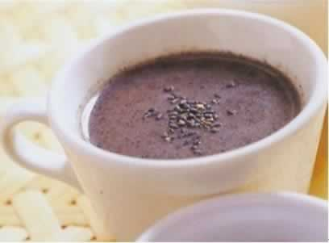
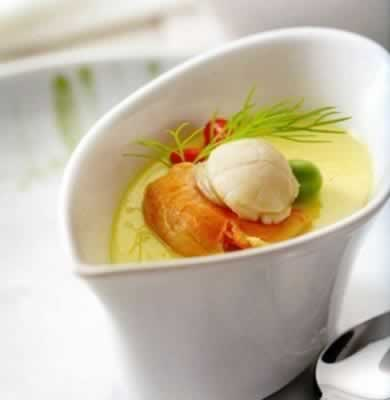

想让宝宝发质好，准妈妈怎么吃？
准妈妈们都希望未来的宝宝可以拥有好发质，那么此时，准妈妈们就可以在孕期通过饮食调理，让宝宝有一头浓密、乌黑的头发。
准妈妈可以在孕期吃一些坚果类的食品，如芝麻、核桃，但是要注意，坚果类的食品油分重，一次不要吃多，吃多了不易消化，而且过于油腻还会影响准妈妈的食欲。
如果准妈妈或准爸爸的头发早白或发黄，准妈妈可以多吃一些含有B族维生素的食物，比如瘦肉、鱼、动物肝脏、牛奶以及绿色蔬菜等，这些食物可以使宝宝的发质得到改善，避免宝宝幼儿期黄发等。
本周推荐尝试食谱1：
果仁黑芝麻糊
推荐理由： 坚果是很有营养的食物，核桃仁，花生仁都有助于胎宝宝的智力发育和健康成长。
食谱原料：
核桃仁，花生仁、腰果、黑芝麻、麦片各50克，白糖适量。
制作方法：
1、将核桃仁、花生仁炒熟，研碎。腰果泡2小时后，切碎；黑芝麻炒熟，研碎；
2、将麦片加适量清水。放入锅中用大火煮沸，放入核桃仁碎、花生仁碎、腰果碎转小火煮5分钟，最后放入黑芝麻碎搅拌均匀，加适量白糖调味即可。
本周推荐尝试食谱2：
扇贝蛋羹
推荐理由：鸡蛋滑嫩，扇贝鲜香，将扇贝的精华融入到滑嫩的蛋羹之中，两者的味道融为一体。
食谱原料：
小油菜50克、鸡蛋1个、核桃仁10克、鲜扇贝肉1粒、芝麻油微量。
制作方法：
1、小油菜洗净入沸水焯一下，捞出放入榨汁机中榨汁，取油菜汁备用。扇贝肉洗净切小粒，入沸水中煮熟、煮透，核桃仁碾碎；
2、鸡蛋打散加入共约2倍的清水和菜汁搅匀，撒上核桃碎、扇贝肉；
3、将蛋璧放入沸水锅中隔水蒸15分钟，淋几滴芝麻油即可。